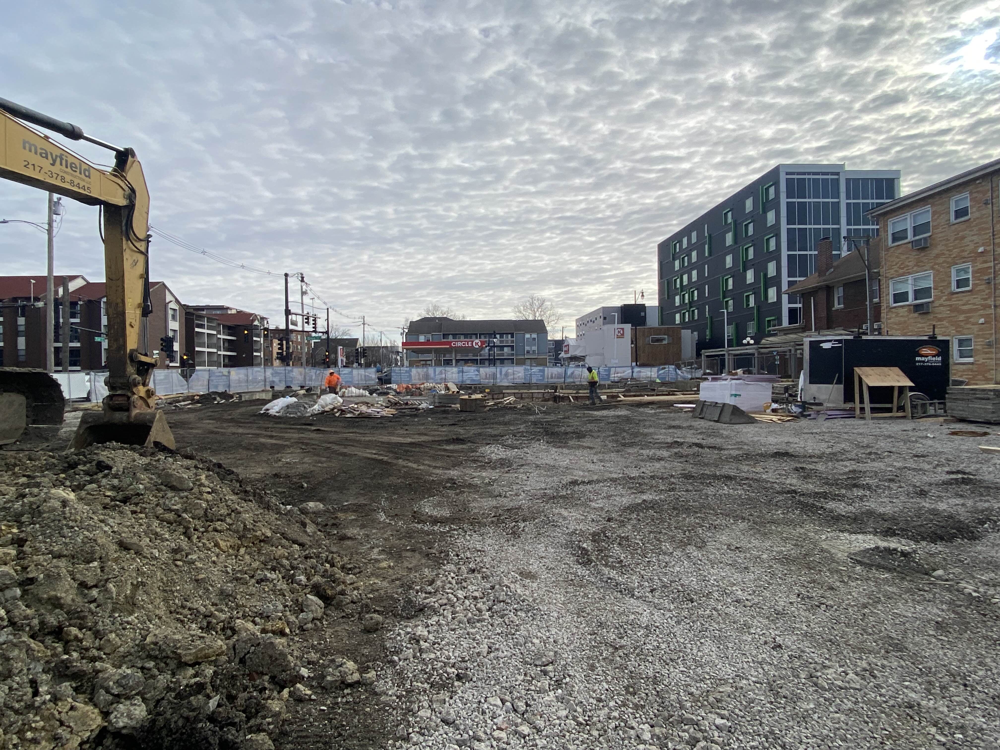
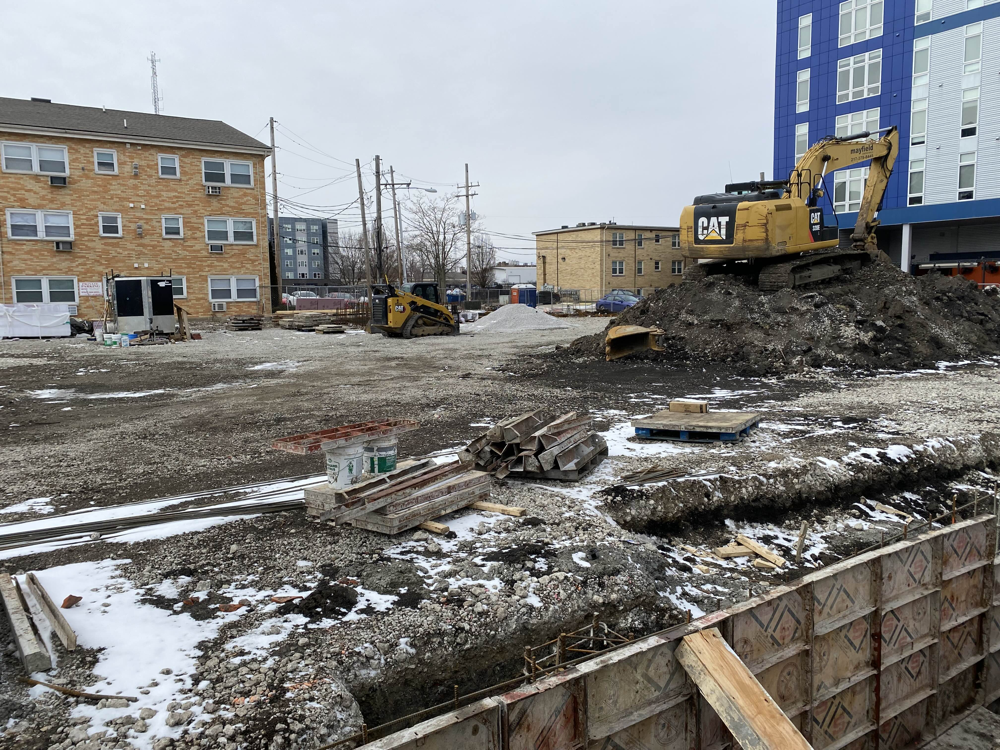
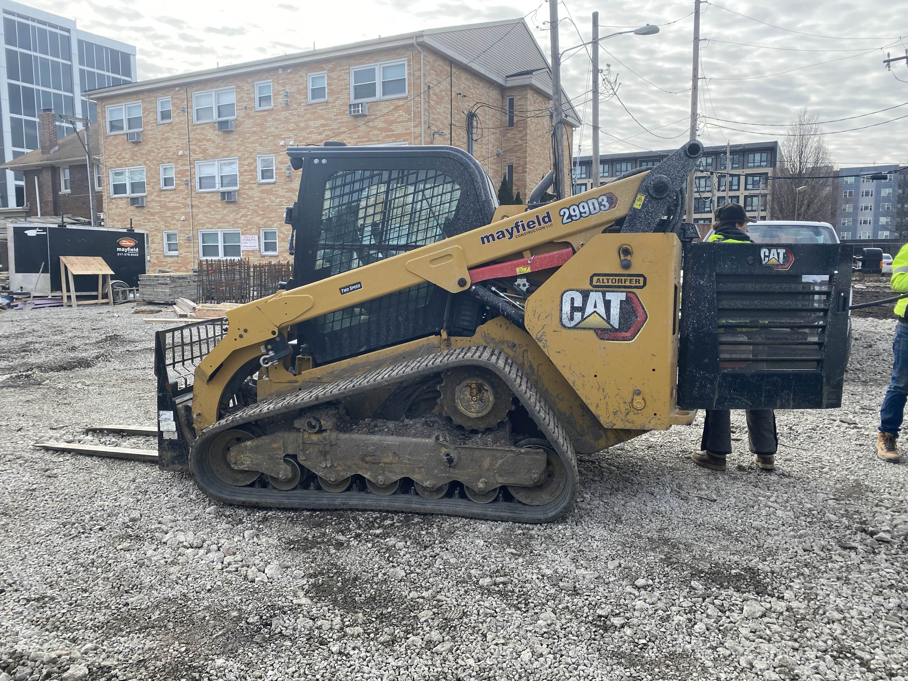

Week 1 - February 13, 2025
The construction of the new studio apartment complex, set to open in fall 2025, began on a chilly February morning. The site, just a block from the university campus, was already buzzing with activity as crews arrived at dawn. A temporary chain-link fence enclosed the perimeter, and a large blue sign at the street corner announced: “UNIVERSITY GROUP — LEASING FALL 2025 — 217-352-3182 — www.ugroupcu.com.” The sign, weathered slightly by the winter air, caught the attention of students hurrying to class, many of whom paused to glance at the future home they might soon call their own.
By mid-morning, the site was alive with the sounds of heavy machinery. Excavators dug into the frost-hardened ground, their buckets scraping away layers of soil to prepare for the foundation. Surveyors marked the corners of the building with wooden stakes and bright pink string, their breath visible in the cold air as they double-checked measurements. Nearby, a group of workers unloaded materials from a truck, their movements brisk to ward off the winter chill. I struck up a conversation with one of them, a seasoned construction worker who had traveled from a nearby town for the project. “This is gonna be a good one,” he said, nodding toward the site. “Lots of students need a place like this.”
As the day progressed, the crew began pouring the foundation. Steam rose from the wet concrete as workers smoothed it into place, their trowels moving quickly to combat the freezing temperatures. The rhythmic hum of activity was punctuated by the occasional shout of instructions or the rumble of a truck engine. Despite the cold, the team worked efficiently, their progress visible in the growing outline of the building’s base.
To ensure the project stayed on track, the site foreman periodically assessed productivity. He used a simple but effective method: observing the crew in short, random intervals to gauge how many workers were actively engaged in tasks. For example, during one observation, he noted that out of 15 workers, 10 were actively working, while the others were taking a brief break or preparing materials. This quick snapshot helped him identify whether the crew was maintaining a steady pace without disrupting their workflow. He also categorized workers into those directly performing tasks, those assisting, and those who were momentarily idle. This approach allowed him to adjust assignments and ensure everyone was contributing effectively.
The foreman explained that these assessments were crucial for keeping the project on schedule. “You can’t just assume everyone’s working at full speed all the time,” he said. “But if you check in randomly and keep an eye on the overall flow, you can spot any bottlenecks before they become a problem.” He also emphasized the importance of not overreacting to small delays or breaks, as they were a natural part of the workday.


Week 2 - February 20, 2025
By the second week of construction at the northeast corner of Green and 1st Street, the site had evolved into a bustling, well-organized hub of activity. What was once a patch of undeveloped land now buzzed with the hum of machinery and the coordinated efforts of a skilled crew. Dominating the scene were two key pieces of equipment: a Caterpillar 299D3 compact track loader and a Caterpillar 320E excavator. These machines, each with its own specialized purpose, were the backbone of the operation, their synchronized performance highlighting the project’s efficiency and precision.
The Caterpillar 299D3, a compact track loader renowned for its versatility, was the site’s primary workhorse for material handling. Its durable rubber tracks provided exceptional traction, allowing it to glide effortlessly over the uneven, muddy terrain—a common challenge in the chilly February weather. Fitted with a sturdy bucket attachment, the 299D3 tirelessly shuttled dirt, gravel, and construction debris to designated stockpile areas. Its compact design proved invaluable in navigating confined spaces, such as along the perimeter fence or near the emerging foundation walls. The operator, a seasoned veteran with years of experience, handled the machine with surgical precision, delivering materials exactly where they were needed without delay. The loader’s adaptability shone through its ability to switch attachments—whether swapping the bucket for forks to move pallets or an auger for drilling tasks—making it a multi-faceted tool as the project’s demands evolved.
In contrast, the Caterpillar 320E excavator stood as the site’s heavy-duty titan. With its extended arm and robust bucket, this powerhouse was tasked with excavating deeper trenches for utility lines and refining the foundation’s layout. The 320E’s advanced hydraulic system ensured smooth, controlled movements, even when lifting substantial loads of soil or breaking through stubborn rock layers. Guided by the surveyors’ precise markings, the operator dug with meticulous accuracy, ensuring every trench met the project’s stringent specifications. The excavator’s efficiency was amplified by its seamless coordination with the 299D3, as excavated material was swiftly scooped up and transported away, maintaining a fluid workflow across the site.
To keep productivity at its peak, the foreman relied on Crew Balance Charts, a methodical tool for optimizing labor and equipment use. He meticulously tracked each worker’s role in the excavation and material-moving process, timing every step. A typical cycle might see the excavator operator digging a trench, the loader operator hauling away soil, and laborers prepping the next section. By analyzing these charts, the foreman could pinpoint inefficiencies—like the loader operator waiting idle between loads—and reassign tasks, such as organizing materials or clearing debris, to eliminate downtime and keep the operation running smoothly.


